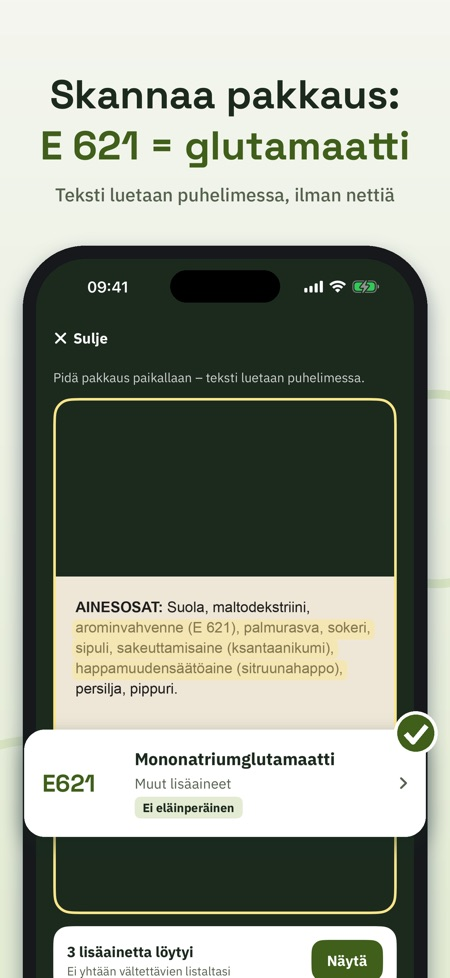
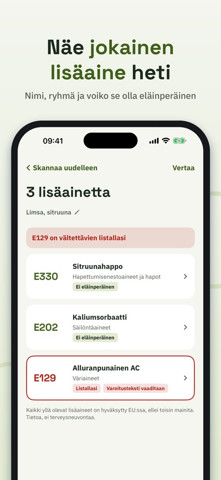
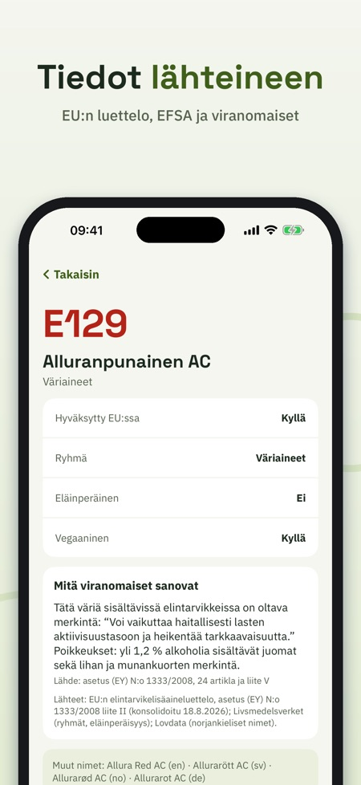

Skannaa ainesosat, ymmärrä. Osoita kameralla ainesosaluetteloa ja näe heti, mikä kukin E-koodi on. Kaikki EU:n luettelon 339 lisäainetta lähteineen. Toimii ilman nettiä.



Mikä on E 471? Ja onko E 120 vegaaninen? E-koodit lukee ainesosaluettelon kameralla ja selittää jokaisen lisäaineen – rauhallisesti, lyhyesti ja lähteineen.
Ilman ostoa: 5 skannausta päivässä sekä haku ja tiedot kaikista lisäaineista, ryhmät ja oppaat. E-koodit Full (kertaosto, ei tilausta): rajattomasti skannauksia, vältettävien lista, historia ja vertailu.
SKANNAA PAKKAUS
Osoita kameralla ainesosia. Teksti luetaan suoraan iPhonessasi, myös ilman nettiä. Sovellus löytää sekä E-koodit (E 330) että nimet (sitruunahappo), myös ruotsiksi, norjaksi, tanskaksi, saksaksi ja englanniksi. Kuvia ei tallenneta eikä lähetetä.
KAIKKI EU:N LISÄAINEET
339 E-koodia EU:n elintarvikelisäaineasetuksesta, nimet kuudella kielellä, ryhmä ja tieto siitä, voiko lisäaine olla eläinperäinen. Kun viranomainen sanoo jotain lisää, se kerrotaan lähteineen: esimerkiksi kuuden väriaineen varoitusteksti, se että titaanidioksidi (E 171) ei ole enää sallittu elintarvikkeissa, sekä makeutusaineiden ja sulfiittien merkintäsäännöt.
HAE JA SELAA
Hae numerolla tai nimellä millä tahansa kielellä. Selaa kuutta ryhmää: väriaineet, säilöntäaineet, antioksidantit ja hapot, sakeuttamisaineet, makeutusaineet ja muut.
OMA VÄLTETTÄVIEN LISTA
Valitse lisäaineet, joita itse haluat välttää – omista syistäsi. Pikavalinnat: varoitustekstin väriaineet, voi olla eläinperäinen, makeutusaineet, sulfiitit, nitriitit. Jokainen skannaus merkitsee ne selvästi.
HISTORIA JA VERTAILU
Anna skannaukselle nimi ja löydä se myöhemmin. Vertaa kahta pakkausta rinnakkain.
OPI
Lyhyet oppaat: mitä E tarkoittaa, miten lisäaine hyväksytään, miten ainesosaluettelo luetaan, väriaineiden varoitusteksti ja vegaaninen vai ei.
Sovellus antaa tietoa, ei terveysneuvoja. Lähtökohta on EU:n hyväksyntä. Sovellus on itsenäinen eikä liity EU:hun, EFSAan tai mihinkään elintarvikeviranomaiseen.